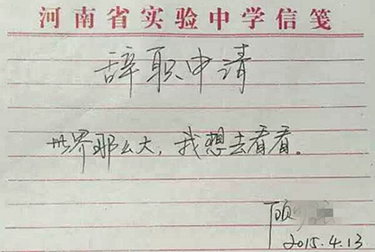

<!doctype html>
<html class="no-js" lang="en">
  <head>
    <meta charset="utf-8" />
    <meta name="viewport" content="width=device-width, initial-scale=1.0" />
    <title>
    
  碎碎念 - 徐梦阳的博客
  

  </title>
  <link href="atom.xml" rel="alternate" title="徐梦阳的博客" type="application/atom+xml">
    <link rel="stylesheet" href="asset/css/foundation.min.css" />
    <link rel="stylesheet" href="asset/css/docs.css" />
    <script src="asset/js/vendor/modernizr.js"></script>
    <script src="asset/js/vendor/jquery.js"></script>
  <script src="asset/highlightjs/highlight.pack.js"></script>
  <link href="asset/highlightjs/styles/github.css" media="screen, projection" rel="stylesheet" type="text/css">
  <script>hljs.initHighlightingOnLoad();</script>

  </head>
  <body class="antialiased hide-extras">
    
    <div class="marketing off-canvas-wrap" data-offcanvas>
      <div class="inner-wrap">


<nav class="top-bar docs-bar hide-for-small" data-topbar>


  <section class="top-bar-section">
  <div class="row">
      <div style="position: relative;width:100%;"><div style="position: absolute; width:100%;">
        <ul id="main-menu" class="left">
        <li id="menu_item_index"><a href="index.html">HOME</a></li>
        <li id="menu_item_archives"><a href="archives.html">Archives</a></li>
        <li id="menu_item_about"><a href="about.html">ABOUT</a></li>
        </ul>

        <ul class="right" id="search-wrap">
          <li>
<form target="_blank" action="http://google.com/search" method="get">
    <input type="hidden" name="q" value="site:xumengyang.com" />
    <input tabindex="1" type="search" name="q"  placeholder="Search"/>
</form>
</li>
          </ul>
      </div></div>
  </div>
  </section>

</nav>

        <nav class="tab-bar show-for-small">
  <a href="javascript:void(0)" class="left-off-canvas-toggle menu-icon">
    <span> &nbsp; 徐梦阳的博客</span>
  </a>
</nav>

<aside class="left-off-canvas-menu">
      <ul class="off-canvas-list">
       
       <li><a href="index.html">HOME</a></li>
    <li><a href="archives.html">Archives</a></li>
    <li><a href="about.html">ABOUT</a></li>

    <li><label>Categories</label></li>

        
            <li><a href="knowleadgemanage.html">知识管理</a></li>
        
            <li><a href="emotion.html">碎碎念</a></li>
        
            <li><a href="pm.html">产品方法论</a></li>
        
            <li><a href="workmanage.html">工作管理</a></li>
        
            <li><a href="hire.html">招聘相关</a></li>
        
            <li><a href="technology.html">技术</a></li>
        
            <li><a href="summary.html">总结</a></li>
        
            <li><a href="timemanage.html">时间管理</a></li>
        
            <li><a href="software.html">工具软件</a></li>
        
            <li><a href="aboutme.html">关于我</a></li>
        
            <li><a href="readrecord.html">阅读</a></li>
        
            <li><a href="operation.html">运营</a></li>
         

      </ul>
    </aside>

<a class="exit-off-canvas" href="#"></a>


        <section id="main-content" role="main" class="scroll-container">
 <script type="text/javascript">
	$(function(){
		$('#menu_item_index').addClass('is_active');
	});
</script>
<div class="row">
	<div class="large-8 medium-8 columns">
		<div class="markdown-body home-categories">
		
			<div class="article">
                <a class="clearlink" href="%E8%AE%A9%E6%89%80%E6%9C%89%E4%BA%BA%E5%B8%A6%E7%9D%80%E5%AF%B9%E4%BD%A0%E7%9A%84%E8%B4%A8%E7%96%91%E5%8E%BB%E6%AD%BB.html">
                
                  <h1>让所有人带着对你的质疑去死</h1>
                  <div class="a-content">
                      
                      <div class="a-content-text">
                        
                        	<p></p>

<p>我妈初中文化，在我出生之前我妈就是一个代课老师，现在还是。这么多年来，每个月打到银行卡里面的固定工资是三十七块五毛，从来都没有变过（实际拿到的比这稍微高一些，但不到一千）。她在家栽了四五分地的菜园，种各种蔬菜，累死累活，省吃俭用。她从小跟我说的最多的一个故事是小学课本里面那个小时候不勤奋，老了以后一事无成的白头翁的故事，并以自己为例子，她说以自己做比喻，这样更生动形象。每次听完了以后，我就会很难过。之所以这么说，是因为二十多年来，好几次转正考试，我妈都没考过。她非常的不自信，不自信的具体表现就是特别喜欢给自己贴标签，总是跟我说：儿子，我这类人是不是很笨？儿子，我这类人是不是就一定做不好这个事情？</p>

<p>我总是回答我妈说，不是，这跟笨不笨根本没有关系。你在没做这件事情之前，就给自己乱贴标签 ，继而给自己找借口和退路。总是说，自己年纪已经这么大了，和那些年轻人一起考试一定考不过他们。 可是你自己一到考试前才开始看书，一看书就打瞌睡，怎么可能能考的好嘛？于是我妈不说话，我继续为她而难过。这个过程周而复始，时间就这么过去了，代课老师这个身份就成了我妈的心病，每次回家去都要拿这个事情反反复复跟我唠叨，自己的青春被耽误了。</p>

<p>我什么都做不了，只能还是继续为她的青春难过，同时我也因此记住了一个很简单的道理，没做事之前，不要抱怨问题的难度，不要想着做不好怎么办？不要给自己贴上：“这件事情我一定做不好”的标签 ，不然，除了越做越挫，什么都做不了。而且，时间不会一直在那儿等你。</p>

<p>我是前年在打篮球的时候认识X的，X是一个二本学校的学生，家境一般，个字很高，不聪明。当时他遇到了一个偶然的机会，到某个知名的互联网公司实习，他很高兴。公司的规定是每天9点半上班，6点半下班，但是公司给外地来实习的实习生提供的宿舍没网，办个宽带一个月要两百多，X舍不得钱，为了多学点东西，X每天早上7点到公司，11点下班回家睡觉。因为是第一次实习第一次来北京，工作的时候遇到很多事情做的并不如人意，他就非常焦虑，总是担心拿不到offer，经常有问题就过来请教我，我也经常会给他出点主意。</p>

<p>当时周末一起打球，他跟我说起一件事情， 他说昨天晚上9点多，隔壁组的大哥写完代码突然抬头问X：同学，你是哪个学校的？X愣了一下，脸涨的通红，很窘迫的小声说：&quot;安徽的一个学校。。。阜，阜阳师范学院”。</p>

<p>大哥哦了一下，于是继续低头写自己的代码。</p>

<p>他说周围的同事几乎都是985院校毕业，而自己只是个二本学校的学生，不知道为什么，天生就觉得自己比别人矮了一截，所以他非常敏感，别人随便问他一个问题，他都会想半天。尤其是问到学校，他就觉得很丢人。是不是我事情做的不好，所以他才问我哪个学校毕业的？他问我</p>

<p>我说不是啊，你想多了。你的心态还没有摆正，记住，在别人没给你打标签前，不要给自己打标签，如果你给自己打上二本学校学生的标签，那么你做任何事情就会给自己找借口，你会越来越自卑，却又会觉得这个事是理所当然的，如此循环往复，你的职业生涯就毁掉了。听罢，X恍然大悟，高兴的回家了。</p>

<p>后来X的工作越来越忙，周末也不来打球，逐渐就失去了 联系，后来偶尔一次遇到他，他说他不光已经成功的拿到了offer，工作几年后还跟着那个问他那个学校毕业的大哥一道去创业，已经当上leader了，我很替他高兴。</p>

<p>偶尔在简书上翻到一篇文章，叫做《十八线城市的二本学生该怎么办》，写的是作为一名二本学生究竟该如何克服自己的弱点让自己变得更优秀，看完了觉得不错，正准备评论，可忽然在底下看完了一个评论让我像吃了个苍蝇一样难受，评论里面这样说：<q>你说的是二本，而我是个大专，我们还是不一样。</q>，哎，果不其然，还是有人会这么说，我想。</p>

<p>不一样吗？著名的IOS程序员TinyFool曾经聊过他某个同事的成长故事，他的那个同事以前是泉州一个很烂大专毕业的，学校本身没有会编程的老师。毕业后找不到出路很痛苦，于是跑到学校的机房做了半年机房管理员，后来去电脑城打工都干不下去，被开除。再后来自己在家里迷惘了半年，学习了半年iOS，最后找到了Tinyfool，本来以他的资质，在上海，甚至是拿不到任何一份IT相关的职位的，而Tinyfool正好看中了他不喜欢抱怨，喜欢默默的把事情做好的潜质，于是一步步的引导，慢慢的去培养他，几年下来，这个小伙子水平不断的上升，最后成了他公司的技术副总裁。</p>

<p>很多人都有上面评论的人的心态，当自己迷茫，什么都不想做的时候，会迫不及待的去到处找人帮助，当别人告诉他一个方法的时候，他总会跟你说，这个方法太难了，我就是个大专/二本，我不行，我做不到。拜托，说自己不行之前先试试好嘛？你做不到，凭什么要求更好的生活？虽然不如上面所说的大专生，有着那么好的际遇，但如果不是这个大专生有着良好的品质，相信，最终他也不会在tiny手下待下去。</p>

<p>还有一种很奇怪的心态，就是通过贬低有着光环标签的人，来获得满足感。一个很经典的句式就是：我认识一个XXX名牌大学的同学，现在不还是跟我一样挫？ 说出这种话的，都是甚至还不如上面的那种不接受正确思维方式的人，那种通过践踏他人来获得满足感的方式，不仅仅暴露出了自己视野之low，而且会让人觉得这个人人品有问题。</p>

<p>通过给人打标签来判断一个人，是简单粗暴的懒惰型思维。因为这样判断的人太多，就导致了一堆人拼了命的给自己贴上各种标签。2014年，我在美团，负责校招，遇到过很多深谙此道的大学生，他们凭空捏造和夸大出一堆名企实习的经历，说起概念来口若悬河，然而问到实际经历的的时候，就支支吾吾的说不出话来。后来我从美团离职，看到了一堆明明在美团做着很基层没什么技术含量的活的人，靠着美团的标签拿到了自己能力范围内不该拿到的<q>高薪</q>，而这些人反而聚在一起跑出来攻击美团，说美团太抠门，自己遭受了不公平的待遇，让我觉得很奇怪。虽然这些人能够靠着标签拿着高薪，但是，人不能一辈子靠自己最初的标签来决定自己的价值，经过两三个公司以后，你的标签给自己带来的收益会越来越少。最终，你能拿到多少报酬会回归到你为工作创造的价值来，不会有任何例外。</p>

<p>所以，无论是工作还是学习，都要以专家的心态去做好每一件事情，失败了，不要去管负面情绪，永远不要说自己不行，只需要继续尝试同时多思考为什么自己做的不好，并持续给自己改进。二本，大专，不聪明，甚至是长得丑，每个被标签束缚而最终打破标签的人，我都能举出一箩筐的例子。你的努力，你创造出来的价值，会一直给你的人生蓄力，蓄力够了，会让你一飞冲天，最后彻底撕破别人附加在你身上标签化的印象，让你自己在别人眼里创造出一个不能被标签化的，独特的你。不去逃避，让所有别人和自己对你的质疑去死，才是我们对抗这个世界的正确方式。</p>

<p>很多同学跑过来问我，我理想很很远大，可是我现在做不好，而且我什么都不想做，我该怎么办？我说，很简单，去死啊。不抱着解决问题态度来提问的人，永远都不会能够得到自己想要得到的答案。</p>

                        
                      </div>
                  </div>
                </a>
                <div class="read-more clearfix">
                  <div class="more-left left">
                  
                    <span class="date">2015/9/18</span>
                    <span>posted in&nbsp;</span> 
          				  
          					    <span class="posted-in"><a href='emotion.html'>碎碎念</a></span>
          				   
                  </div>
                  <div class="more-right right">
                  <span class="comments">
                      

                       
                  </span>
                  </div>
                </div>
              </div><!-- article -->
        
			<div class="article">
                <a class="clearlink" href="write_blog.html">
                
                  <h1>为什么要写博客？聊聊我写博客这三年</h1>
                  <div class="a-content">
                      
                      <div class="a-content-text">
                        
                        	<blockquote>
<p>之前答应过订阅公众号的同学来写一篇我为什么坚持写博客的文章，这篇便是回应</p>
</blockquote>

<h3 id="toc_0">为什么要写作</h3>

<p>我老大曾经问过我这样一个问题，我写作的目标究竟是什么？我当时回答的是有两点：</p>

<p><strong>写作倒逼输入：</strong></p>

<p>写作能够倒过来逼着我不断的学习学习再学习，因为不断的学习新的知识才能会有高质量的输出，一旦停止学习，输出质量就无法保障。</p>

<p><strong>适度的自我营销</strong></p>

<p>我曾经说过这样一句话：聒噪的人虽然讨厌，但却是多了很多机会。传播自我品牌和形象，会对自己未来有极其大的帮助，需要在职业生涯的早期提前做准备。</p>

<p>第三个当时我没有说，我怕他不信：</p>

<p><strong>写作是一件非常有意思的事情</strong></p>

<p>写作能够让我把我的经历、情感、观点全部给释放出来，我甚至于觉得，表达冲动甚至也是性冲动的一种，在大学里乐此不疲的做无聊摆蜡烛活动的学生，就是最好的佐证。</p>

<h3 id="toc_1">我写博客这三年</h3>

<p>我真正开始写博客，始于2012年。那一年我正好大三，上大学时没有认同感的痛苦，加上自己过于内向，找不到人倾诉，一直都有在QQ空间写日志，写写写，不停的写，两年多的时间一共攒了三百多篇，大概二十万字是肯定有的（想想当时真的是浪费了很多时间），那时候觉得人生无望，总是觉得天黑了，脑子四周永远只有四个字：<q>糟糕透了</q></p>

<p>后来，因为一个偶然的机会看到刘未鹏的博客，当时那种震撼的感觉，至今都难以忘记，就好像是内心里有一座寂静了千年的寺庙，突然间被一个黑衣人爬了进来，他拍拍钟上的灰尘，然后用尽全身的力气敲了一下钟楼上的钟：duang！！ </p>

<p>我从早上10点多到实验室打开浏览器偶尔翻到mindhack.cn，直到半夜实验室看大门的大爷叫我回家，我一直坐在电脑面前看，甚至连水都没喝一口，回到宿舍的时候。我突然感觉，我的人生可能就由此莫名其妙的发生了戏剧性的变化。</p>

<p>不久以后，我就用wordpress搭建了一个网站：xumengyang.com，这个域名由此便过上了被我折腾到欲仙欲死的日子，当时我的博客几乎试用过所有的博客系统，用几天就换一下，用几天就换一下，我对这个事情乐此不疲，甚至都忘了去写博客……直到最近一年，我才意识到自己应该把精力放在内容和积累上，不能捡了芝麻丢了西瓜，于是他们现在就都变成了静态文件，躺在了我github的repo上，期间因为写博客还有了一些小小的收获，就暂且不表了。</p>

<p>工作以后，时间少了，因为周围一直都没有人写，认识的好玩的朋友也非常少，就写的比较随意，想到了就会写一些，大概可能是因为处在舒适区吧，总觉得自己写的还挺不错的。</p>

<p>直到一个偶然的机会，我加入了开智社区 — 一个遍地都是学霸的微信群，在整天被心智和智商碾压的时候。我想：<q>oh my god，我是不是该做些什么？</q></p>

<p><q>是的，I do!</q></p>

<p>于是我5月份重新捡起了我的微信公众号和博客，开始继续写，我不喜欢那种被人甩在身后的感觉，非常非常不喜欢。</p>

<p>但现在我现在好像逐渐找到方向了？坚持输出将近两个月，收获很大。</p>

<p>关注和阅读就暂且不提，我觉得更重要的是这个过程中认识了很多开智社区的朋友，终于见识到了什么叫状元学渣七比一，别人飞机我是拖拉机。同时又被知名公知詹老师拉到了一个号称两年内要上市充满了投资人作家产品狗设计师的实际上全部是死gay群的微信群，又借此认识了很多非常非常好玩的人，比如说打卡背单词六百多天的小户，每个红包都说要谢谢的女王，说话很欠的投资人小欠等等……</p>

<p>我也逐渐意识到，路不能一个人走，有一些人陪着你，至少也是不会孤单的吧。</p>

<p>同时我在写工作方法和知识管理方法的时候，梳理了我的思路，同时看了和不充了一些资料，把很多困扰我工作且没有被解决掉的问题都解决掉了，这点就更开心了。</p>

<p>作为一个坚持无力症患者，我是怎么坚持写了两个多月呢？因为我已经将写作变成了我的一项习惯，下篇文章我会给大家分享一下我读：《习惯的力量》的心得。（本来这篇想写下我在美团那两年的成长和学习，但可能会比较敏感，以后有机会再来写吧。）</p>

<h3 id="toc_2">声明</h3>

<pre><code>本文最先首发于我的微信公众号growup1984以及网站http://xumengyang.com ,由本人投递到各个网络渠道。
转载请完整保留本声明的所有内容,否则本人将追究法律责任(尤其是微信公众号)
原始链接：
</code></pre>

<h3 id="toc_3">广告时间</h3>

<p>扫码支持我读本电子书：<br/>
</p>

<p>欢迎扫描二维码订阅我的微信公众号<br/>
</p>

                        
                      </div>
                  </div>
                </a>
                <div class="read-more clearfix">
                  <div class="more-left left">
                  
                    <span class="date">2015/6/27</span>
                    <span>posted in&nbsp;</span> 
          				  
          					    <span class="posted-in"><a href='emotion.html'>碎碎念</a></span>
          				   
                  </div>
                  <div class="more-right right">
                  <span class="comments">
                      

                       
                  </span>
                  </div>
                </div>
              </div><!-- article -->
        
			<div class="article">
                <a class="clearlink" href="14312712306176.html">
                
                  <h1>你永远都叫不醒一个装睡的人</h1>
                  <div class="a-content">
                      
                      <div class="a-content-text">
                        
                        	<pre><code>
今天家里有事，没时间写了，正好在微信群里面和其它朋友说到关于驱动力的话题，po一篇很久以前写的文章吧。

</code></pre>

<p>前几天刷朋友圈，有朋友说了如下一句话『忽然发现csdn弱爆了，ChinaUnix才是王道』，然后我告诉他，读点英文文档会比较好，然后我跟他掰扯了半天，他还是表示读中文文档比较好，读英文文档是装逼……</p>

<h3 id="toc_0">我自己的一些经历</h3>

<p>然后我就突然想到了一些关于自己的事情</p>

<p>大概是四年前，那时候我在某师范学院读大二，因为无聊，就一个人坐在宿舍打开爸妈给我买的Y460，装上vc++6.0刷oj，成天叫着嚷着要做师院第一ACM大牛，当时哪怕坚持刷半年，那水平也是相当的不错了，可惜后来我只刷了三天，于是总会想起那天晚上的画面，月亮有点弯，天有点冷，在得知我是我们学校唯一知道ACM这个东西的学生之后，我有点恍惚的用一指禅敲着键盘，猴哥点了根烟，轻蔑的笑了笑，看着我说了一声：“来一局？”，我一恍惚，便掉进了逃避的窟窿，过了很久才挣扎着爬了出来。</p>

<p>毕业以后我来到美团上班，做了一段时间的运维做的很不爽，吃饭的时候就跟江哥吐槽，说自己想去学开发，然后江哥问了我一句，既然你想做，为什么自己不去学会了呢，说到底，你还是不想做嘛，然后我觉得有道理，然后又想了一年多…</p>

<p>所以后来看很多人的时候，我就会拿他来和我过去的状态做个比较，大概估计的话，我觉得应该不会差的太远。</p>

<p>自从有妹子说我太过自我以后，我便努力改变了很多，比如说少说点自己做不到的事情，比如说正确的认识到自己的不足，比如说少自我膨胀，等等…</p>

<p>但要一下彻底改掉自己几十年养下来的坏习惯，真的很难，只能一点点的去变，有同学大致跟我说过这样一句话：</p>

<blockquote>
<p>知道自己的缺点却不去改正，是一件很搞笑的事情。</p>
</blockquote>

<p>我就觉得他说的很对，我听了很惭愧，作为一个人应该起码是要有点自尊心的，最起码不能被自己鄙视，我现在就做不到，于是就感觉很不好…</p>

<p>虽然自己是个半吊子，却还总想着去帮别人，但最后结果总是不太好，于是便悟出一个人生哲理**一个吃屎的狗，永远不会教会另外一条狗不吃屎，但是,它是有机会可以成为一个不吃屎的狗的。<br/>
**</p>

<h3 id="toc_1">学弟的故事</h3>

<p>我后来上大三，整天翘课去实验室玩，学着画点电路板，写点程序什么的，本来没什么，后来拿了一些现在看来毫无意义的奖，就有学弟找上门来要我带他，我给他拷了资料，给他指了个位子，就说先坐这儿吧，可以自己学，然后过学了几天，人就不见了，问起来总是说哎呀这个很难，那个不会，又没人教，当时我很想说去你妈的，然后我忍住了，挂了电话。</p>

<p>昨天又听刘昌毅说</p>

<blockquote>
<p>作为一个PM就是要证明自己在某种对一件事情理解的比别人透彻</p>
</blockquote>

<p>如果要说一个放之四海皆准的原则的话，那就是和菜头说的一句名言了:”<strong>我说的都是错的</strong>”因为把情景放大以后，道理就都是错的了。我觉得很多事情虽然现在我想得不对，随着时间的变化，总会想对的，至少还有希望。</p>

<p>但有句话叫做，你永远也叫不醒一个装睡的人，对于那种装睡的人呢，我们能做的就是，不要在不必要的人身上花费不必要的时间…以此我又想明白一个很残酷的事实，一切因为愚蠢和懒惰而造成自己命运凄惨的人，都不值得同情，大家都是成年人，在独自面对困境的时候，厮杀还是逃避，每个都需要做出自己的决定，并承担决定的后果，最后，买单。 </p>

                        
                      </div>
                  </div>
                </a>
                <div class="read-more clearfix">
                  <div class="more-left left">
                  
                    <span class="date">2015/5/10</span>
                    <span>posted in&nbsp;</span> 
          				  
          					    <span class="posted-in"><a href='emotion.html'>碎碎念</a></span>
          				   
                  </div>
                  <div class="more-right right">
                  <span class="comments">
                      

                       
                  </span>
                  </div>
                </div>
              </div><!-- article -->
        
			<div class="article">
                <a class="clearlink" href="14304912022246.html">
                
                  <h1>每天进步一点点-送书活动</h1>
                  <div class="a-content">
                      
                      <div class="a-content-text">
                        
                        	<h2 id="toc_0">为什么要进步</h2>

<p>梦阳君作为一个从农村家庭出来的孩子，自毕业以后来到互联网这个行当以来，便深深的爱上了这个行业，那时我在我的个人博客里写到：</p>

<blockquote>
<p>昨天签了五年的合同。如果不出意外的话，下个月就能转正了。本来我已经习惯了不对别人或别的事情抱有太大的希望，但的确不得不说美团给了我足够多的意外和惊喜。至少于我来说，如同打开了潘多拉魔盒看到了能够窥探的魔法球，看到了更宽广的更大的世界，我来到这里的目的算是达到了</p>
</blockquote>

<p>可能是出于人生前将近二十年未见过世面造成自卑的一种补偿反应，我对在如何找到能够自己不断进步的方法这个问题上耗费了大量的时间和精力。但因为从小扎根在自己身上的坏习惯很难改掉，做一件事情总是很难做到让自己满意，然后又去反思和挣扎，又去尝试，可还是不够满意，工作两年来，始终觉得自己没有什么太大的进步，觉得自己在原地打转，反反复复痛苦不堪。但是我一直都对如何”让自己变得更好”这一点上念念不忘，然后还带着逃避的心情特地写了篇博文<a href="#comment1"><sup>1</sup></a>：</p>

<blockquote>
<p>仔细看了下自己既往以来写过的博文，于是就会想，既然我有写过”总想变得更好”，就应该践行自己的承诺，从目前来说，我做的还远远不够，总的来说，我是没有资格宣扬自己『总想变的更好』这句话的，因为我是个没有节操的人，我根本没有坚持过自己的信念，我该怎么办，似乎问题也总是没有答案， 后来想明白了，该吃吃，该喝喝，想做什么就立马去做，没有必要想太多给自己压太多想做却做不来的事情，于是反而觉得挺不错的。</p>
</blockquote>

<p>然后我又忿忿的在博文里面提到：</p>

<blockquote>
<p>这段时间我又想明白一个很残酷的事实，一切因为愚蠢和懒惰而造成自己命运凄惨的人，都不值得同情，大家都是成年人，在独自面对困境的时候，厮杀还是逃避，每个都需要做出自己的决定，并承担决定的后果，最后，买单。</p>
</blockquote>

<p>这种挣扎的状态持续到现在，终于稍微有了一些改观，我觉得我现在迫切的需要解决这个困扰了我多年的问题，才能让我达到一个新的目标。我觉得这个过程记录下来一定会非常的有意思，便尝试去做一下试试，于是便有了这篇文章。</p>

<h2 id="toc_1">关于如何进步</h2>

<h3 id="toc_2">我的想法</h3>

<p>大家都知道，持续的进步是一个非常困难的事情，因为往往要提升某一个方面的技能/心智水平，一两次的简单练习都是不够的，很多事情都需要大量时间的刻意练习以后才会有效果，比如说编程。但是，我们的动物本能却最期望是，做一件事情，立马就会有反馈，比如说撸管。这就导致了一个矛盾了，做一件有意义的事情，如果没有即时的反馈，就不想去做，而有及时反馈的事情，却往往都不是能够对你长远有好处的事情。李笑来曾经在《把时间当做朋友》里面提到，要尽量的去做没有及时反馈的事情，而往往真正能够真正的提高你，让你能够与众不同的，就是哪些一两次练习没有结果以后你放弃掉的事情。蔡志忠就说过这样一句话：这样持续下去，长此以往，我们便陷入了先有鸡还是先有蛋的怪圈，得不到任何的进步了。</p>

<blockquote>
<p>人生就象走阶梯，每一阶有每一阶的难点。无法克服难点，再怎么努力都只能在原地跳，毫无进展.</p>
</blockquote>

<p>关于进步这一点，我就立刻想到了自己在学习电子的时候想到的一个词：电子跃迁，一个电子只有吸收到一定的能量级以后，才会跃迁到另外一个能量级上，而没有达到那个能量值的时候，电子总是保持自己原来的状态不变的。你看看，这个和我们的进步理论是多么的相似，只有不断的获得能量，才能让自己达到更高阶的能量级！</p>

<p>那么，如何去降低达到这一目标的能力呢？关于这一点，我立马想到的是：<br/>
1、再多坚持一会儿<br/>
2、把一个看起来很遥远的目标拆分成几个关键的点</p>

<h4 id="toc_3">多坚持一会儿</h4>

<p>我们来看第一个，再多坚持一会儿，关于坚持这个方面我尝试过很多事情，但实际的实践过几次以后，我便对自己坚持的能力不抱任何信心了，半年前我在博客里反思的时候说过：</p>

<blockquote>
<p>我目前做了这些事情：坚持每天早起（7天，已经停了）、坚持每天写一篇blog（大学的时候坚持过一个月，现在停了，现在甚至都不能保证每个月一篇了ಥ_ಥ）、坚持每天搞一篇文章放到微信公众号上去（坚持了一个月，现在停了），坚持每天写工作总结（已经坚持了5个月，持续中）、每天玩Clash of clans，已经坚持一年，每天阅读互联网的新闻和资讯以及看书，已经坚持3年，每周看在线视频网站浏览成人影片，已经坚持3年，每周吃喝拉撒睡，已经坚持22年。</p>
</blockquote>

<p>总结就是：简单，容易，好玩，你觉得必须要做的事情就容易坚持下去，光靠毅力去做却没有任何收获的事情，对于我这种人来说，是很难达到的，当然，对于毅力非常强的同学，根本就不存在这样的问题啦，哈哈。我觉得做事情的时候不尝试去挑战客观规律，做起来不会太累。</p>

<p>我的原则是，在不擅长的地方，能捞点就多捞点，不要花太多的精力，我现在每天花五分钟，有意识的训练自己玩了一年半的clash of clans，虽然觉得没啥好玩的，仅仅是为了锻炼自己的毅力，因为我觉得，坚持是一件潜移默化的事情，一年多到现在已经有了一些进步，至少我现在再也没有出现过把一件事情扔下去撒手不管的情况了。而且，很有意思的一点是，当时说好和我一起坚持玩的小伙伴，现在已经没有一个人在玩了。</p>

<h4 id="toc_4">拆分目标</h4>

<p>我们再来看，拆分目标这一点，就像我上面说的电子跃迁一样，如果把跃迁的门槛放低一点呢？就好比说，本来我们从10到100，是本质性的变化，那么，我们能不能尝试着发扬一下啊Q精神，告诉一下自己：”从10到11就很了不起了！”李笑来曾经说过一个他朋友学习GRE的故事</p>

<blockquote>
<p>“我的一个朋友曾跟我分享他的做法。当年他终于搞明白自己要拿到奖学金就得获得GRE高分的时候，被单词量要求吓了一跳。他说，他用了两天时间才想办法说服了自己这应该是件快乐的事情。一共要搞定20,000个单词，而因此可能获得的奖学金是每年40,000美元左右—并且连续4年没有失业可能（后来的事实是，他直到5年之后才获得了博士学位）。当时的美元兑换人民币的汇率差不多是1:8，所以，大约相当于每年320,000元人民币。而如果一年的税后收入是320,000元人民币的话，那就相当税前赚取了差不多400,000元人民币。那么，每个单词大约值20元人民币—这还只不过算了一年的收入而已。所以，他终于明白背单词是非常快乐的。他每天都强迫自己背下200个单词</p>
</blockquote>

<p>如果我们能够每天进步一点点，那么长此以往，改变是不是就是水到渠成的事情呢？说到这里，我突然想到了王阳明说的：”知易行难”，事实上实际做的时候，往往就和你想的完全的不一样。我尝试过把一个目标拆分成非常非常细的小目标，最终却很难完成自己的任务，内疚将自己折磨的十分痛苦，直到最近，我回家以后躺着看新闻的时候突然意识到。。。。</p>

<p>是因为习惯啊！习惯！然后我仔细的review了一下自己的工作，发现自己居然没有一个固定的行为模式！比如说，我可能上午会写工作计划，也有可能是下午才想起写工作计划！也有可能是上午画原型，下午也画原型，完全按照心情去安排。回家以后做的第一件事情并不是去看自己完成了那些事情，那些事情应该去做，而是直接躺床上玩手机玩到11点！想到了这，我就突然很沮丧：妈的，之前时间管理的书都白看了，最基本的东西都没弄懂。于是我迫不及待的爬起来，想想如何去改变这样的状态，于是就有了这篇文章。。。</p>

<h3 id="toc_5">想法是需要验证的</h3>

<p>以前看到过战隼的”100天行动计划”，觉得和我的想法非常match,觉得非常有意思，于是便想尝试一下执行一下这个计划。我觉得，有想法是好事，但一定要去验证这个想法是否可行，于是便想着给自己提一个目标。翻了翻自己的计划列表，变想着从简单的先做起，挑战一下plank的锻炼计划，看情况再执行其它的计划。<br/>
关于计划的编写，安人心智的阳志平老师写的文章<a href="#comment2"><sup>2</sup></a>里面说过：</p>

<blockquote>
<p>当你写下「我要减肥十斤」计划的瞬间，大脑会自动脑补，既然你没有指定谁在什么时候以什么方式完成减肥任务，那么大脑干脆以为已经完成了，将其扔进记忆深层。这么一来，事后提取非常困难，需要借助 GTD 或任务清单这类记忆外部化辅助工具。如果将人类大脑想象为一个简化的输入输出装置，制约这个装置输入输出速率的是工作记忆，它是人类记忆、注意等所有认知能力的瓶颈，容量非常有限，仅仅能记住4~9个电话号码。狭小的工作记忆内存不足以兼容多目标，于是，多数新年目标在敌消我涨竞争下，变得难以提取，相互冲突。这就是为什么绝大多数新年计划必然会失败。<br/>
于是为了计划的可行，我决定使用if&hellip;else 的句式,这样可以确保我的大脑不会自动脑补，哈哈哈！</p>
</blockquote>

<p>具体是这样：<br/>
<strong>如果我下班回到家，我就立刻立马去做plank，每天增加10秒，直到10分钟为止，每天将坚持时间结果在微信上更新</strong></p>

<h2 id="toc_6">活动</h2>

<p>以前在老胡<a href="#comment3"><sup>3</sup></a>手底下干活的时候，老胡同志就经常教导我们：”作为一个成年人，一定要说自己能够做到的事情，不要塞上江南空许愿”。于是决定给自己的小计划制定一些惩罚措施，我正好手里有一些自己看过觉得不错的书，想送出去给别人，于是便有了这个活动。<br/>
书在这里：<br/>
</p>

<p><strong>活动细则如下</strong>：</p>

<ul>
<li>转发此消息到朋友圈，并写明：”等着看笑话,哈哈哈”，并截图发至我的微信后台，告知想要哪本书，我会在后台记录统计</li>
<li>如果我有一天以上未更新公众号说明自己计划的执行情况，我便算挑战失败。</li>
<li>如果我持续更新公众号并说明自己计划的执行情况，我便算挑战成功。</li>
<li>如果我挑战失败，且如果你跟我在同一个城市，我会当面送你我在其中指定的一本书，并请你吃顿饭。</li>
<li>如果我挑战失败，且我们不在一个城市，我也会包邮送你在其中指定的一本书，但就不请吃饭了：）</li>
<li>如果人数太多，我会随机选择人发,这么几本书造假也没啥意思哈</li>
<li>如果我挑战成功，我就把书全部给卖了，不给你们这帮看笑话的，哈哈哈哈哈哈！</li>
</ul>

<p>这只是我的第一个计划，以后还会有其它活动的，因为我还有一堆书没卖呢，欢迎关注，嘿嘿！</p>

<h2 id="toc_7">参考</h2>

<p><span id=comment1>1、<a href="http://xumengyang.com/%E6%80%BB%E6%83%B3%E5%8F%98%E7%9A%84%E6%9B%B4%E5%A5%BD.html">总想变得更好</a></span><br/>
<span id=comment2>2、<a href="http://mp.weixin.qq.com/s?__biz=MzA3Mjk0MTcyNg==&amp;mid=204219591&amp;idx=1&amp;sn=bb77c5ac9381708c6b0eb88ed62ff25c&amp;key=1936e2bc22c2ceb52794c49ddd04bb4b4e584c98df0df0cefe03f407f6e0e42d458ee906b08bcb77ac0ef7b07d80bd35&amp;ascene=1&amp;uin=MTE0NTE1OTgwNw%3D%3D&amp;devicetype=Windows+7&amp;version=61000721&amp;pass_ticket=0zhFbXtnPOmydw2CYvMSJY5IWb2ISWXrHkm43ah8Aqj9BNNQXpnSVNo9PQGFDwIv">新年好，好新年</a></span><br/>
<span id=comment3>3、我在美团工作时的leader</span></p>

<h2 id="toc_8">修订</h2>

<p>暂无</p>

<h2 id="toc_9">其它</h2>

<p>欢迎扫描二维码订阅我的微信公众号<br/>
<br/>
</p>

                        
                      </div>
                  </div>
                </a>
                <div class="read-more clearfix">
                  <div class="more-left left">
                  
                    <span class="date">2015/5/1</span>
                    <span>posted in&nbsp;</span> 
          				  
          					    <span class="posted-in"><a href='emotion.html'>碎碎念</a></span>
          				   
                  </div>
                  <div class="more-right right">
                  <span class="comments">
                      

                       
                  </span>
                  </div>
                </div>
              </div><!-- article -->
        
			<div class="article">
                <a class="clearlink" href="14292904414145.html">
                
                  <h1>世界这么大，你看看看个毛线</h1>
                  <div class="a-content">
                      
                      <div class="a-content-text">
                        
                        	<p></p>

<p>最近被河南省实验中学顾老师的10字辞职信刷爆了朋友圈，所有人纷纷出动：朋友圈里一堆姐姐们哭着喊着纷纷表示嘤嘤嘤写出了自己的心声，互联网段子狗……哦不对，做营销的同学们摩拳擦掌纷纷表示哈哈哈又有新素材了。</p>

<p>看着大家从头玩到尾赞来赞去不亦乐乎，我其实就只想问一个问题：老师一年加起来三个月假，你特么不能放暑假的时候出去看啊。你知道我们IT狗一年加多少班吗？出去看看的理由完全不成立啊！</p>

<p>仔细想想，似乎每个人总是喜欢在自己想做的事情上给出一个非常冠冕堂皇的借口，以此来说服自己和周围的人，其实说到底只是想逃离环境给自己带来的痛苦吧，十个字辞职信，不过是自欺欺人罢了。</p>

<p>一个人最可怕的状态莫过于欺骗自己，所以从人生经验的角度来看，不要做自己感动自己的事情这句话，还是很有指导意义的。</p>

<p>你看，据新闻报导，目前为止，顾老师现在还没有动身。</p>

                        
                      </div>
                  </div>
                </a>
                <div class="read-more clearfix">
                  <div class="more-left left">
                  
                    <span class="date">2015/4/18</span>
                    <span>posted in&nbsp;</span> 
          				  
          					    <span class="posted-in"><a href='emotion.html'>碎碎念</a></span>
          				   
                  </div>
                  <div class="more-right right">
                  <span class="comments">
                      

                       
                  </span>
                  </div>
                </div>
              </div><!-- article -->
        
			<div class="article">
                <a class="clearlink" href="14291121970881.html">
                
                  <h1>我不想在二十多岁死去</h1>
                  <div class="a-content">
                      
                      <div class="a-content-text">
                        
                        	<p></p>

<p>晚上在家刷知乎，看到周筠老师自己的专栏文章<a href="#comment1"><sup>1</sup></a>里引用到罗曼罗兰的这句话：</p>

<blockquote>
<p>大部分人在二三十岁就死去了，因为过了这个年龄，他们只是自己的影子，此后的余生则是在模仿自己中度过，日复一日，更机械，更装腔作势的重复他们在有生之年的所作所为</p>
</blockquote>

<p>我就突然想到了我开始接触互联网、认识了很多人以后，回家时见到的场景。小镇上所有的人都像是老旧的、发黄的录影带，总是在枯燥无味的，不停的，重复着循环播放：垂暮的老头拄着拐杖不停的絮叨，老妇女们对着麻将桌不住的欢呼。唯一变化的就是，拐杖逐渐的变成了轮椅，麻将桌也慢慢变成了全自动麻将桌。”家里的时间好像走的格外格外的慢” 我跟自己说。</p>

<p>我在大学里也有过这样的感受，坦诚的说：在大学里遇到的一切，一度让我对未来很绝望。那时候的感受就是：周围的每个人都麻木不仁，浑浑噩噩,不知道自己是什么，要做什么。。跟环境反抗了很多次，未果，我觉得很生气，于是改了个QQ签名：”我觉得这些人都提前死掉了”，然后发挥啊Q疗法，称所有人为傻逼，于是就爽了。</p>

<p>然后因为好玩，我就自己去捣鼓各种乱七八糟的东西，看乱七八糟的书，参加各种奇怪的比赛，比如说”数学建模”,”飞思卡尔”,之类的比赛，去打打酱油，获了几个小奖，但没什么实际目的，无非是为了摆脱自己濒临绝望的状态，仅此而已。最后来到美团实习，才算是与旧的一切告别，开始新的生活。我记得那时候，虽然实习工资很低，但我每天6点多来公司，晚上11点回家，还是觉得很开心，大概是因为那时候视野突然被打开，每天都抑制不住的欣喜吧，那时候还比较年轻（虽然现在也不大），当时看到知乎上盗盗的回答<a href="#comment2"><sup>2</sup></a>，居然还哭了一顿：</p>

<blockquote>
<p>当时张小龙问了我一句，从小家教是否十分严格；我说，恩，是的，家里人从小把我管的很严，有些时候会比较内向和缺乏自信。（这是事实，校招阶段，所有的面试过程中，我表面上都很平和，实际上内心有时会出现那么一点的小自卑，因为当时应届生能进腾讯基本上都是985、211这样子的名校，而我当时只是江西师范大学这样一个很没有名气的小本科生；而且同台竞技的研究生也居多）。然后张小龙开始回忆说，他曾经跟我一样，十分的不自信，但是在寻找成长的过程，他过去的那些种经历反而造就了他谦逊、冷静、不骄不躁的性格以及做事风格。然后，他继续跟我比划说他相信我过去这种处于劣势的性格会伴随着我的成长和自信，终有一天会跟压迫中的弹簧一样反跳的更高，从而成为优势。 </p>
</blockquote>

<p>事后我想，为什么我当时即改变不了环境？而环境却也无法改变我？</p>

<p>我当时觉得可能是因为我自己也没太想清楚什么是对的，所以我说服不了别人，而因为当时我是对的，别人所以也无法改变我。现在想来，没有对错，一切只是因为我们从小生长的环境不同，只是我们的价值观不一样，我们都无法变成彼此价值观内觉得OK的人，我们终究是要走不同路的，所以不必强求就是。</p>

<p>余华的书里<a href="#comment3"><sup>3</sup></a>有这样一句话，我看了至今都深以为然：</p>

<blockquote>
<p>很久以来，我始终有一个十分固执的想法，我觉得一个人成长的经历会决定其一生的方向。世界最基本的图像就是这时候来到一个人的内心深处，如同复印机似的，一幅又一幅地复印在一个人的成长里。在其长大成人以后，不管是成功，还是失败；不管是伟大，还是平庸；其所作所为都只是对这个最基本图像的局部修改，图像的整体是不会被更改的。当然，有些人修改的多一些，有些人修改的少一些。</p>
</blockquote>

<p>我觉得我是很幸运的人，虽然限于父母的职业和视野的局限，没有让我过上富裕的生活，但从小也勉强算是衣食无忧，虽然没有从小博览群书，但父母的教育培养了我读书的习惯。从小的孤独和狭窄的视野反而随着我不断的在工作中见识到了更多的新东西，反而更加加倍的刺激了我的好奇心，迫使我继续学习下去，一路走来，还是需要去感谢很多人的，我不能教他们所失望。</p>

<p>如果一个人需要让自己发生改变，其实很难，但若有强烈的渴望和意愿，日益精进，必能不断进步，让自己上升到新的高度。最近略有懈怠，翻盘自省一番，干活去了。</p>

<h2 id="toc_0">参考</h2>

<p><span id=comment1>1、摘自周筠知乎专栏： <a href="http://zhuanlan.zhihu.com/yeka52/20002144">大多数人在二三十岁上就死去了</a></span><br/>
<span id=comment3>2、摘自余华 <a href="http://book.douban.com/subject/5446815/">十个词汇里的中国</a></span><br/>
<span id=comment2>3、知乎用户盗盗的回答：<a href="http://www.zhihu.com/question/19924411">腾讯的张小龙是一个怎样的人?</a></span></p>

<h2 id="toc_1">修订</h2>

<ul>
<li>20150417 添加微信二维码</li>
<li>20150417 换了个微信二维码</li>
</ul>

<h2 id="toc_2">其它</h2>

<p>欢迎扫描二维码订阅我的微信公众号<br/>
</p>

                        
                      </div>
                  </div>
                </a>
                <div class="read-more clearfix">
                  <div class="more-left left">
                  
                    <span class="date">2015/4/15</span>
                    <span>posted in&nbsp;</span> 
          				  
          					    <span class="posted-in"><a href='emotion.html'>碎碎念</a></span>
          				   
                  </div>
                  <div class="more-right right">
                  <span class="comments">
                      

                       
                  </span>
                  </div>
                </div>
              </div><!-- article -->
        
			<div class="article">
                <a class="clearlink" href="%E8%8E%AB%E5%90%AC%E7%A9%BF%E6%9E%97%E6%89%93%E5%8F%B6%E5%A3%B0%EF%BC%8C%E4%BD%95%E5%A6%A8%E5%90%9F%E5%95%B8%E4%B8%94%E5%BE%90%E8%A1%8C.html">
                
                  <h1>莫听穿林打叶声，何妨吟啸且徐行</h1>
                  <div class="a-content">
                      
                      <div class="a-content-text">
                        
                        	<p></p>

<p>与朋友之间的关系，我有个不是很恰当的比喻，我觉得我们每个人都就好比不同的列车，可能在你的一生中，总会遇到其他的列车，有的会面带笑靥向你迎面走来而转瞬就只能听见风的声音，有的可能会和你并肩前行而慢慢的看着他的背影渐行渐远，我们作为一辆列车的宿命是，终究只能沿着各自的轨道嘶吼着前进，尽管会有无奈。<br/>
</p>

<p>我一向对于朋友缺乏关心，一者是因为我个人比较内向，不太擅长流露出、甚至于经常会克制自己的感情。二者是我在遇到了问题以后更喜欢自己去解决，而不是碰到了点困难就去求助别人，于我来说，浪费别人的时间和麻烦别人是一件很难接受的事情，虽然我还是经常不得不浪费别人的时间。<br/>
</p>

<p>内向的人，比别人更敏感和脆弱，更容易感受到自己的情绪，所以更容易自己感动自己？我想大概是的吧。这种情绪我也经历过，很幸运的是，我已经度过这个阶段了。经常会有同学在很偏僻的地方写下一些很感性的内容，我会去看，想说一些鼓励的话，但却忍着不去评论，我知道，每个人都需要一个情绪的出口，文字是不伤害别人最好的方式。但我非常想告诉大家一个残酷的事实就是，尽管每个人都需要得到别人的认可，但是，这个世界永远不会在意你的感受，一个人容易被伤害的本质原因在于：”自己发现自己竟然没有自己想的那么重要”。而当我们尝试想让自己变得重要的时候，会发现，这是很难做到的。因为一个敏感脆弱不坚定的人，是无法让自己变得重要的。所以小波先生会在自己的文章里面写到：”人最本质的痛苦，就是对自己无能的愤怒。”，唯有保持清醒，才能知道自己的价值。</p>

<p></p>

<p>可能我这个人表现的言辞犀利，导致很多朋友都不愿意跟我聊天，关于言辞犀利，虽然有欲盖弥彰的嫌疑，但我还是想简单的解释一下。这么多年来，我一直都在不停的审视自己的缺点，并对自己的缺点加以修正，我知道自己所有的优点和部分缺点。对我来说，有价值的部分是我不知道的缺点。而由此及彼，个体到一般，我便更喜欢坦诚的说出别人的缺点，因为我知道，对一个人成长最有用的一点是：了解自己的缺点。当然，拒绝成长，就可以什么都不做。当然，大多数人所谓的追求进步，也不过是叶公好龙而已。</p>

<p>很多朋友对我的行为买椟还珠，刚开始的时候我对别人的反应觉得很不爽。后来想想，可能追求的事情不一样，很多人说自己想要一个东西，其实并不是真的想要，他只是说说而已，即传说中的：<strong>”伪需求”</strong>，那何苦要强求别人做我想做的事情，于是便学会了克制。既然大家都喜欢在寒风中围绕着柴火互相取暖而不去点火，我也就不会去强迫别人去做，我觉得只要你开心，你可以接受，内心不矛盾，一切就很OK啦。</p>

<p>我一向都很认同一个观点，就是：<strong>如果你想做一件事情，全世界都会给你让路。</strong>不信？闯下红灯？借用张小龙的一句话：”我说的都是错的”，如果有什么想做的，不妨尝试一下，”莫听穿林打叶声，何妨吟啸且徐行”。</p>

<h2 id="toc_0">其它</h2>

<p>欢迎扫描二维码订阅我的微信公众号<br/>
</p>

                        
                      </div>
                  </div>
                </a>
                <div class="read-more clearfix">
                  <div class="more-left left">
                  
                    <span class="date">2015/4/12</span>
                    <span>posted in&nbsp;</span> 
          				  
          					    <span class="posted-in"><a href='emotion.html'>碎碎念</a></span>
          				   
                  </div>
                  <div class="more-right right">
                  <span class="comments">
                      

                       
                  </span>
                  </div>
                </div>
              </div><!-- article -->
        
			<div class="article">
                <a class="clearlink" href="%E5%80%BC%E5%BE%97%E7%BA%AA%E5%BF%B5%E7%9A%84%E4%B8%8E%E4%B8%8D%E5%80%BC%E5%BE%97%E7%BA%AA%E5%BF%B5%E7%9A%84.html">
                
                  <h1>值得纪念的与不值得纪念的</h1>
                  <div class="a-content">
                      
                      <div class="a-content-text">
                        
                        	<p>说起来，很多事情值得纪念，但如果认真起来问原因的话，其实也并不值得，因为每一天都是新的，值得你去创造，所以若是理性的角度来说，纪念某个日子是某种很愚蠢的行为，而人们总是对这种问题乐此不疲的趋势来看，自欺乃是人之本能。</p>

<p>每每回首过往的日子，总体给我的感觉就是：耗费了大量的青春和热情，但同时也错过了太多的东西。 老大说，青春不管怎么过都会是浪费的，想想，老男人的话，倒真的是挺有道理。所以很多事情也无需再纠结，做了再说，事情好不好就另讲啦。</p>

<p>最近的状态比起之前又好了很多，比如说，做事的效率稍微高了一些，思考问题更多了一些，总结多了一些，等等…… 我算不得聪明人，也算不得极其勤奋，更算不得做事特别有激情，所以，能不能混下去，能混多久，这个还真不好说，只能说，恩，看机遇吧。</p>

<p>长期以来自我反省给我造成的痛苦，经常让我半夜失眠， 近几个月来，自己一些比较明显的问题正在努力改进，相信很快就会有收获，随之而来的，焦虑便减弱了许多，再加上我已经适应此种频度的长期自我迭代，总体来说还是挺开心和满意的。</p>

<p>我尝试不让自己变得愚蠢，我告诫自己，生命短暂，学会过好当下，珍惜自己该珍惜的，时间，情感，一切的一切。</p>

<p>一个事情过去了，就永远过去了，不要想念它。 借以王兴的话说就是：『既往不恋，纵情向前』</p>

<p>不要再在事情发生以后问自己，究竟什么是值得纪念的与不值得纪念的，因为纪念本来就不值得。</p>

                        
                      </div>
                  </div>
                </a>
                <div class="read-more clearfix">
                  <div class="more-left left">
                  
                    <span class="date">2015/1/31</span>
                    <span>posted in&nbsp;</span> 
          				  
          					    <span class="posted-in"><a href='emotion.html'>碎碎念</a></span>
          				   
                  </div>
                  <div class="more-right right">
                  <span class="comments">
                      

                       
                  </span>
                  </div>
                </div>
              </div><!-- article -->
        
              


			<div class="row">
			  <div class="large-6 columns">
			  <p class="text-left" style="padding-top:25px;">
			   
			  </p>
			  </div>
			  <div class="large-6 columns">
			<p class="text-right" style="padding-top:25px;">
			 <a href="emotion_1.html">&raquo; Next Page</a> 
			</p>
			  </div>
			</div>
		</div>
	</div><!-- large 8 -->

 <div class="large-4 medium-4 columns">
  <div class="hide-for-small">
    <div id="sidebar" class="sidebar">
          <div id="site-info" class="site-info">
            
                <h1>徐梦阳的博客</h1>
                <div class="site-des">怯懦的人只会埋葬自己</div>
                <div class="social">


  <a class="rss" href="atom.xml" title="RSS">RSS</a>
                
              	 </div>
          	</div>
              <div id="site-categories" class="side-item ">
                <div class="side-header">
                  <h2>Categories</h2>
                </div>
                <div class="side-content">

      	<p class="cat-list">
        
            <a href="knowleadgemanage.html"><strong>知识管理</strong></a>
        
            <a href="emotion.html"><strong>碎碎念</strong></a>
        
            <a href="pm.html"><strong>产品方法论</strong></a>
        
            <a href="workmanage.html"><strong>工作管理</strong></a>
        
            <a href="hire.html"><strong>招聘相关</strong></a>
        
            <a href="technology.html"><strong>技术</strong></a>
        
            <a href="summary.html"><strong>总结</strong></a>
        
            <a href="timemanage.html"><strong>时间管理</strong></a>
        
            <a href="software.html"><strong>工具软件</strong></a>
        
            <a href="aboutme.html"><strong>关于我</strong></a>
        
            <a href="readrecord.html"><strong>阅读</strong></a>
        
            <a href="operation.html"><strong>运营</strong></a>
         
        </p>


                </div>
              </div>

              <div id="site-categories" class="side-item">
                <div class="side-header">
                  <h2>Recent Posts</h2>
                </div>
                <div class="side-content">
                <ul class="posts-list">
	      
		      
			      <li class="post">
			        <a href="14470837813322.html">产品经理的思维方式002—神秘力量理论</a>
			      </li>
		     
		  
		      
			      <li class="post">
			        <a href="14470756104748.html">产品经理的思维方式002—明确自己的目标</a>
			      </li>
		     
		  
		      
			      <li class="post">
			        <a href="%E4%BA%A7%E5%93%81%E7%BB%8F%E7%90%86%E7%9A%84%E6%80%9D%E7%BB%B4%E6%96%B9%E5%BC%8F%EF%BC%881%EF%BC%89%E2%80%94%E9%81%BF%E5%BC%80%E9%97%AE%E9%A2%98%E8%8C%83%E5%9B%B4%E8%AE%A8%E8%AE%BA%E9%97%AE%E9%A2%98%E9%83%BD%E6%98%AF%E8%80%8D%E6%B5%81%E6%B0%93.html">产品经理的思维方式（1）—避开问题范围讨论问题都是耍流氓</a>
			      </li>
		     
		  
		      
			      <li class="post">
			        <a href="%E5%BE%AE%E4%BF%A1%E5%85%AC%E4%BC%97%E5%8F%B7%E8%BF%90%E8%90%A5%E6%96%B9%E6%B3%95%E8%AE%BA%E7%B3%BB%E5%88%97%EF%BC%881)%E2%80%94%E5%85%AC%E4%BC%97%E5%8F%B7%E7%9A%84%E6%8E%92%E7%89%88.html">微信公众号运营方法论系列（1)—公众号的排版</a>
			      </li>
		     
		  
		      
			      <li class="post">
			        <a href="%E5%86%99%E4%BD%9C%E8%80%85%E7%9A%84%E5%B7%A5%E5%85%B7%E7%AE%B1%E7%B3%BB%E5%88%973%E2%80%94%E2%80%94%E6%95%B4%E7%90%86%E5%92%8C%E8%BE%93%E5%87%BA.html">写作者的工具箱系列3—整理和输出</a>
			      </li>
		     
		  
		      
		  
		      
		  
		      
		  
		      
		  
		      
		  
		      
		  
		      
		  
		      
		  
		      
		  
		      
		  
		      
		  
		      
		  
		      
		  
		      
		  
		      
		   
		  		</ul>
                </div>
              </div>
        </div><!-- sidebar -->
      </div><!-- hide for small -->
</div><!-- large 4 -->

</div><!-- row -->

 <div class="page-bottom clearfix">
  <div class="row">
   <p class="copyright">Copyright &copy; 2015
Powered by <a target="_blank" href="http://www.mweb.im">MWeb</a>,&nbsp; 
Theme used <a target="_blank" href="http://github.com">GitHub CSS</a>.</p>
  </div>
</div>

        </section>
      </div>
    </div>

  
    

    <script src="asset/js/foundation.min.js"></script>
    <script>
      $(document).foundation();
      function fixSidebarHeight(){
        var w1 = $('.markdown-body').height();
          var w2 = $('#sidebar').height();
          if (w1 > w2) { $('#sidebar').height(w1); };
      }
      $(function(){
        fixSidebarHeight();
      })
      $(window).load(function(){
          fixSidebarHeight();
      });
     
    </script>

    <script src="asset/chart/all-min.js"></script><script type="text/javascript">$(function(){    var mwebii=0;    var mwebChartEleId = 'mweb-chart-ele-';    $('pre>code').each(function(){        mwebii++;        var eleiid = mwebChartEleId+mwebii;        if($(this).hasClass('language-sequence')){            var ele = $(this).addClass('nohighlight').parent();            $('<div id="'+eleiid+'"><div>').insertAfter(ele);            ele.hide();            var diagram = Diagram.parse($(this).text());            diagram.drawSVG(eleiid,{theme: 'simple'});        }else if($(this).hasClass('language-flow')){            var ele = $(this).addClass('nohighlight').parent();            $('<div id="'+eleiid+'"><div>').insertAfter(ele);            ele.hide();            var diagram = flowchart.parse($(this).text());            diagram.drawSVG(eleiid);        }    });});</script>
<script type="text/javascript" src="https://cdn.mathjax.org/mathjax/latest/MathJax.js?config=TeX-AMS-MML_HTMLorMML"></script>
<script>
  (function(i,s,o,g,r,a,m){i['GoogleAnalyticsObject']=r;i[r]=i[r]||function(){
  (i[r].q=i[r].q||[]).push(arguments)},i[r].l=1*new Date();a=s.createElement(o),
  m=s.getElementsByTagName(o)[0];a.async=1;a.src=g;m.parentNode.insertBefore(a,m)
  })(window,document,'script','//www.google-analytics.com/analytics.js','ga');

  ga('create', 'UA-61550939-1', 'auto');
  ga('send', 'pageview');
</script><script>
var _hmt = _hmt || [];
(function() {
  var hm = document.createElement("script");
  hm.src = "//hm.baidu.com/hm.js?1c94d10bc0cd7587e4438e9ef154d854";
  var s = document.getElementsByTagName("script")[0]; 
  s.parentNode.insertBefore(hm, s);
})();
</script>


  </body>
</html>
